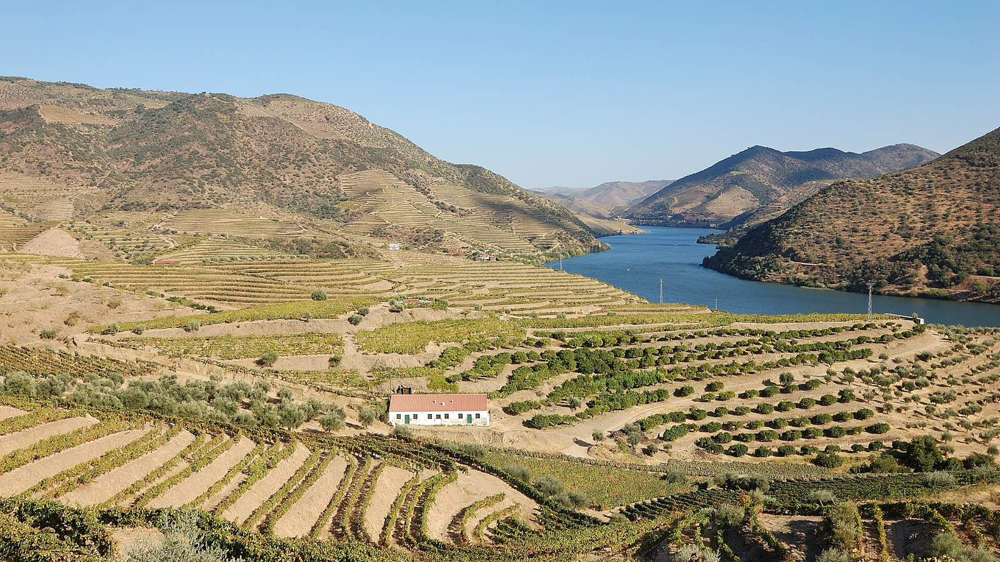
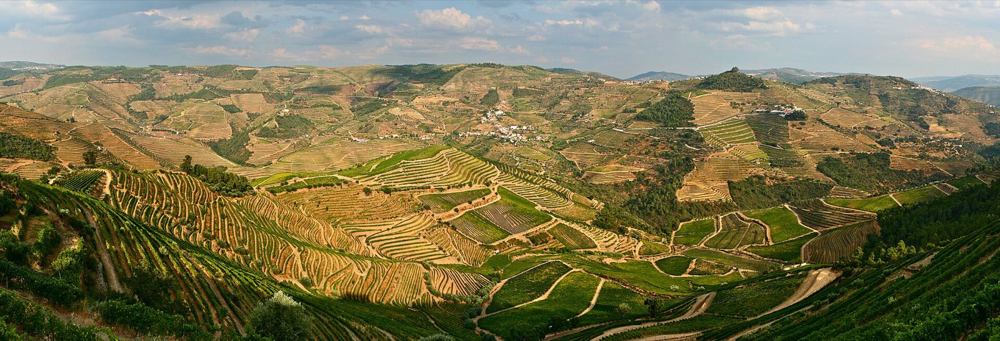
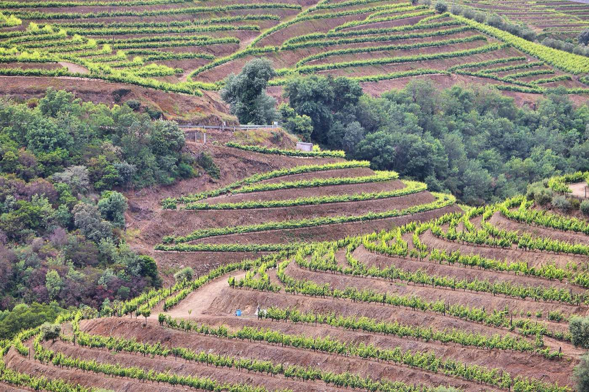
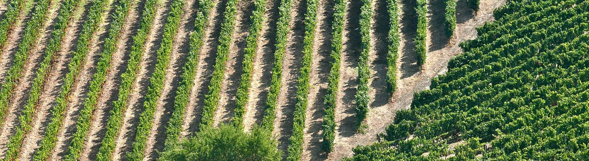

Vale Alto Branco 2024
DOC Douro, white
Lemon peel, wet schist and white peach. Tight and salty at the finish; better still after a year in bottle.
Covas do Douro, Cima CorgoEst. 1911
Fourteen hectares of hand-built schist terraces, from the river at 75 m up to 410 m. The Lobo family has farmed them for four generations and still picks every row by hand.

Each wine comes from its own band of terraces. Higher means cooler nights, more acid and a later pick.
DOC Douro, white
Lemon peel, wet schist and white peach. Tight and salty at the finish; better still after a year in bottle.
DOC Douro, red
Black cherry, rockrose and a pinch of pepper. Soft tannins, made to open on a weeknight with grilled sardines.
DOC Douro, red, from vines planted in 1938
Violet, blackberry and cocoa, then graphite. Firm, fine-grained tannins; decant it an hour before dinner.
Porto, trodden by foot in granite lagares
Cassis, liquorice and dried fig over a spine of acid. It will throw a crust: stand the bottle upright a day before opening.
| Measure | Branco 2024 | Tinto 2022 | Reserva 2021 | Port 2020 |
|---|---|---|---|---|
| Grapes | Rabigato 45%, Códega do Larinho 35%, Viosinho 20% | Touriga Franca 50%, Tinta Roriz 30%, Tinta Barroca 20% | Touriga Nacional 60%, Touriga Franca 25%, old field blend 15% | Touriga Nacional, Touriga Franca, Sousão |
| Terraces | Socalco Norte, 380 to 410 m | Patamares do Meio, 220 to 300 m | Vinha Velha, 300 to 360 m | Vinha Velha and the river terraces, 90 to 360 m |
| Growing season rain | 642mm | 318mm | 587mm | 411mm |
| Picked | 6 to 11 Sep | 14 to 27 Sep | 20 Sep to 2 Oct | 17 to 24 Sep |
| Alcohol | 12.5% | 13.5% | 14.0% | 19.5% |
| Total acidity | 6.4g/l | 5.6g/l | 5.9g/l | 4.8g/l |
| Residual sugar | 1.2g/l | 0.8g/l | 0.6g/l | 98g/l |
| Ageing | 6 months on lees, a fifth in used 500 l barrels | 12 months, 30% in used French oak | 18 months in 225 l French oak, 30% new | 20 months in old wooden vats, bottled unfiltered |
| Bottles made | 6,400 | 14,200 | 3,900 | 1,200 |
| Drink | 2025 to 2029 | now to 2030 | 2026 to 2038 | 2030 to 2060 |

The quinta climbs from the river to the ridge in 31 terraces. Every wine on this page is a slice of that climb.

“We pick the high terraces last. Up there the schist holds the night cold, and the Touriga Franca keeps its acid well into October.”
Twenty-six pickers, 29 picking days and three treading nights in the lagares. Whites go first, from the top; the old vines wait for the cool at the end.
48.2 tonnes in all
Tastings run Tuesday to Saturday at 10:30 and 15:00, for up to ten people, led by Inês or her brother Duarte.

Shipped from the quinta in pulp cases. Free across mainland Portugal from six bottles; €18 a case to the rest of the EU.